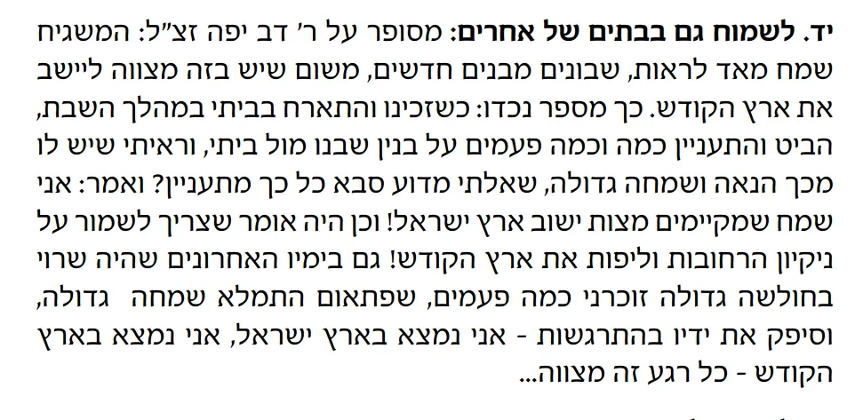

הפני יהושע מקשה:
כיצד אומרת הגמ' במסכת כתובות (דף קיא עמוד א):
"אמר רבי אלעזר: כל הדר בארץ ישראל שרוי בלא עון, שנאמר: ובל יאמר שכן חליתי העם היושב בה נשוא עון".
אם כן מדוע נחרב הבית בראשונה ובשניה?
ומתרץ שכל מה שנאמר בגמ' זה רק לאדם שגר בארץ ישראל לשם מצווה, שהיא מקום קדושה.
וז"ל: שם אמר ר"א כל הדר בארץ ישראל שרוי בלא עון כו'. נראה דהיינו דווקא במי שדר בה לשם מצות ישיבת ארץ ישראל שהיא מקום קדושה וכדי שתגין עליו זכות ארץ ישראל שלא יבא לידי חטא ואז אף אם לפעמים חטא בא לידו או אפילו עון שהוא מזיד ע"י שתקף עליו יצרו מ"מ מסתמא גורם לו זכות ישיבת ארץ ישראל שלא לן ועבירה בידו דלאחר שחטא ומצא עצמו עומד במקום קדוש ודאי תוהה על הראשונות ושב ורפא לו מה שאין כן מי שדר שם דרך מקרה או מפני שהוא מקום מולדתו או מפני שבח פירותיה וכיוצא בו ומכל שכן במי שהוא מבעט בה ומזלזל בקדושת הארץ לילך אחר יצרו הרע לא דברה תורה במתים אדרבה עליו נאמר ותבואו ותטמאו את ארצי ונחלתי שמתם לתועבה ומפני כך מצינו כשגברו עונות אבותינו גלינו מארצינו ושמם מקום מקדשינו ואיה הבטחת העם היושב בה נשוא עון אלא על כרחך כדפרישית ובלא"ה נמי מסתברא דהכי הוא שאף אם נאמר דארץ ישראל מכפר לגמרי אפ"ה לא עדיף מיום הכפורים שמכפר כפרה גמורה ואפ"ה מי שאומר אחטא ויוה"כ מכפר אין יוה"כ מכפר הרי דעל כרחך הא דאמרינן דהיושב בארץ ישראל שרוי בלא עון היינו דאף שעשה איזה עון מבלי שם על לב קדושת הארץ בשעת יצרו בכה"ג זכות ארץ ישראל גורם שיתחרט לעשיית עון, כן נראה לי:
כדי לזכור שאנו גרים בארץ לשם מצווה, הוצאנו מגנט נפלא לתלייה על הדלת - לזכור את הזכות שיש לנו במגורים בארץ ישראל.
מגנט זה שווה מליונים, על ידו יכול האדם לזכות לכפרת עוונות. אשרינו!
בנוסף כתב בספר חרדים:
כתב רמב"ן במנין תרי"ג מצות ישיבת א"י כל עת ורגע שהאדם בא"י הוא מקיים המצוה זו וידוע שעיקר שכר המצוה על השמחה גדולה בה כדכתיב תחת אשר לא עבדת את ה' אלהיך בשמחה אם כן צריך היושב בארץ ישראל להיות שמח תדיר במצוה התדירה באהבתו אותה
המגנט מיועד לעורר את האנשים לשמחה הגדולה במצווה זו.
המגנט - מחולק חינם לכל מי שקונה את הספר בית ראובן.
עוד על מעלת מצוות ישיבת ארץ ישראל
היה אומר הגר"א תרי"ג המצוות מתחלקות בין האיברים. יש המתבצעות על ידי הידיים או הרגליים, ישנן כאלו התלויות בפה ובדיבור ואילו מצוות ישוב ארץ ישראל מתקיימת על ידי הגוף בשלמותו. בעוד מצווה מצינו מעלה זו, היא מצוות סוכה. ובשם הגר"א אמרו שרמז יש לדבר בפסוק בתהלים (עו, ג): "וַיְהִי בְשָׁלֵם סֻכּוֹ וּמְעוֹנָתוֹ בְצִיּוֹן". רמז שמצוות הסוכה ומצוות ישוב ארץ ישראל מתקיימות על ידי כל הגוף בשלמות.
הוסיף "האמרי אמת" (ליקוטים ע' קטז) וביאר מה שנאמר בספרי 'ישיבת ארץ ישראל שקולה כנגד כל המצוות שבתורה', לפי שבכל מצווה שעושה אדם הריהו מקדש אחד מאבריו, אולם על ידי ישיבת ארץ ישראל ניתן להעלות ולקדש את כל האברים.
וכך היה אומר ר' נחום רבה של שאדיק[1]: הנפש החיים כותב: שבכל מצווה ממשיך האדם אור מקיף על עצמו מלמעלה. אם כן יכול כל אדם להבין, כי אין אור מקיף בכל המצוות, כבמצוות ישיבת ארץ ישראל, כי מפעולת המצווה בגשמי יכול להבין הרוחני, אחרי כי אין מצווה כזאת שיקיף א. כל הגוף, ב. לכל אדם ג. בכל מקום ד. בכל זמן, ואפילו מצוות סוכה ג"כ המצווה היא דווקא כשהוא בסוכה (ולא בכל מקום), ורק לאנשים (ולא לכל אדם), ורק לזמן (ולא בכל זמן) (ארח דוד – ר' דוד בהר"ן עמ' רכ"ב).
